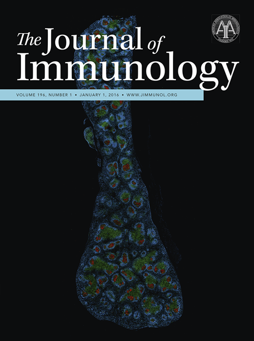
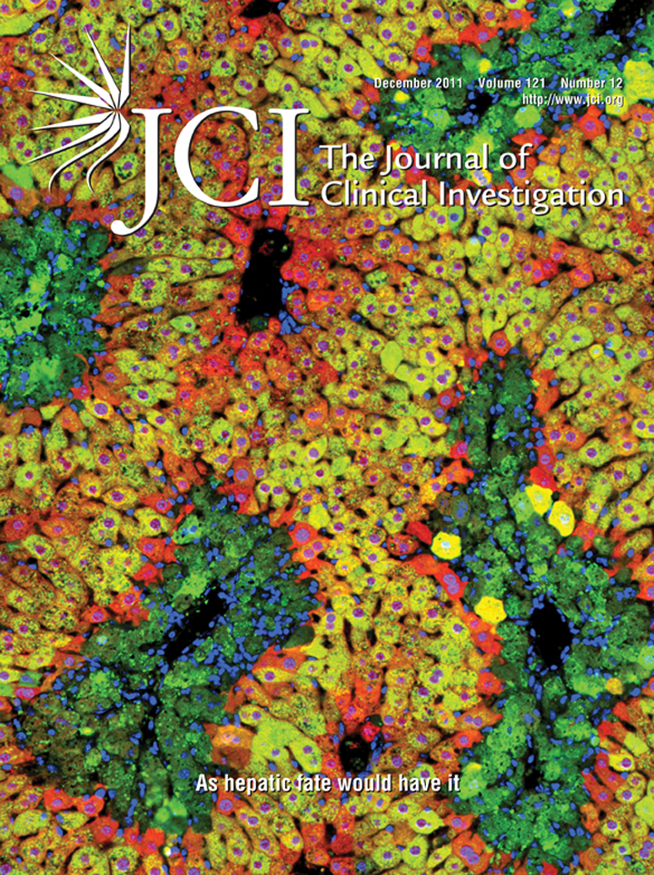

|
I am a medical sciences researcher at Mexico Children's Hospital in Mexico City, where I work on mucosal immunology. I work on intestinal immune responses and inflammation in chronic diseases. I did my PhD at CINVESTAV, where I was advised by Vianney Ortiz-Navarrete. I'm member of the National Research System and the National Academy of Sciences. |

|
|
I'm interested in mucosal immunology, immunometabolism, microbiota, and metabolic diseases. Much of my research is about the role of intestinal macrophages on T cell function, and the interaction with epithelial cells and microbiota. Representative papers are highlighted. |
|

|
Medina-Contreras O, Harusato A, Nishio H, Flannigan KL, Ngo V, Leoni G, Neumann PA, Geem D, Lili LN, Ramadas RA, Chassaing B, Gewirtz AT, Kohlmeier JE, Parkos CA, Towne JE, Nusrat A, Denning TL
IL-1 family members are central mediators of host defense. In this article, we show that the novel IL-1 family member IL-36γ was expressed during experimental colitis and human inflammatory bowel disease. Germ-free mice failed to induce IL-36γ in response to dextran sodium sulfate (DSS)-induced damage, suggesting that gut microbiota are involved in its induction. Surprisingly, IL-36R–deficient (Il1rl2−/−) mice exhibited defective recovery following DSS-induced damage and impaired closure of colonic mucosal biopsy wounds, which coincided with impaired neutrophil accumulation in the wound bed. Failure of Il1rl2−/− mice to recover from DSS-induced damage was associated with a profound reduction in IL-22 expression, particularly by colonic neutrophils. Defective recovery of Il1rl2−/− mice could be rescued by an aryl hydrocarbon receptor agonist, which was sufficient to restore IL-22 expression and promote full recovery from DSS-induced damage. These findings implicate the IL-36/IL-36R axis in the resolution of intestinal mucosal wounds. |

|
Manzanares-Meza LD, Gutiérrez-Román CI, Jiménez-Pineda A, Castro-Martínez F, Patiño-López G, Rodríguez-Arellano E, Valle-Rios R, Ortíz-Navarrete VF, Medina-Contreras O
Mucosal innate immunity functions as the first line of defense against invading pathogens. Members of the IL-1 family are key cytokines upregulated in the inflamed mucosa. Inflammatory cytokines are regulated by limiting their function and availability through their activation and secretion mechanisms. IL-1 cytokines secretion is affected by the lack of a signal peptide on their sequence, which prevents them from accessing the conventional protein secretion pathway; thus, they use unconventional protein secretion pathways. Here we show in mouse macrophages that LPS/ATP stimulation induces cytokine relocalization to the plasma membrane, and conventional secretion blockade using monensin or Brefeldin A triggers no IL-36γ accumulation within the cell. In silico modeling indicates IL-36γ can pass through both the P2X7R and Gasdermin D pores, and both IL-36γ, P2X7R and Gasdermin D mRNA are upregulated in inflammation; further, experimental blockade of these receptors' limits IL-36γ release. Our results demonstrate that IL-36γ is secreted mainly by an unconventional pathway through membrane pores formed by P2X7R and Gasdermin D. |
|

|
Medina-Contreras O, Geem D, Laur O, Williams IR, Lira SA, Nusrat A, Parkos CA, Denning TL
The two most common forms of inflammatory bowel disease (IBD), Crohn's disease and ulcerative colitis, affect approximately 1 million people in the United States. Uncontrolled APC reactivity toward commensal bacteria is implicated in the pathogenesis of the disease. A number of functionally distinct APC populations exist in the mucosal lamina propria (LP) below the intestinal epithelium, but their relative contributions to inflammation remain unclear. Here, we demonstrate in mice important roles for the chemokine receptor CX3CR1 in maintaining LP macrophage populations, preventing translocation of commensal bacteria to mesenteric lymph nodes (mLNs), and limiting colitogenic Th17 responses. CX3CR1 was found to be expressed in resident LP macrophages (defined as CD11b(+)F4/80(+)) but not DCs (defined as CD11c(+)CD103(+)). LP macrophage frequency and number were decreased in two strains of CX3CR1-knockout mice and in mice deficient in the CX3CR1 ligand CX3CL1. All these knockout strains displayed markedly increased translocation of commensal bacteria to mLNs. Additionally, the severity of DSS-induced colitis was dramatically enhanced in the knockout mice as compared with controls. Disease severity could be limited by either administration of neutralizing IL-17A antibodies or transfer of CX3CR1-sufficient macrophages. Our data thus suggest key roles for the CX3CR1/CX3CL1 axis in the intestinal mucosa; further clarification of CX3CR1 function will likely direct efforts toward therapeutic intervention for mucosal inflammatory disorders such as IBD. |
|
EquipmentCytoFlex LX MoFlo Astrios VarioSkan AriaMx booking calendar |